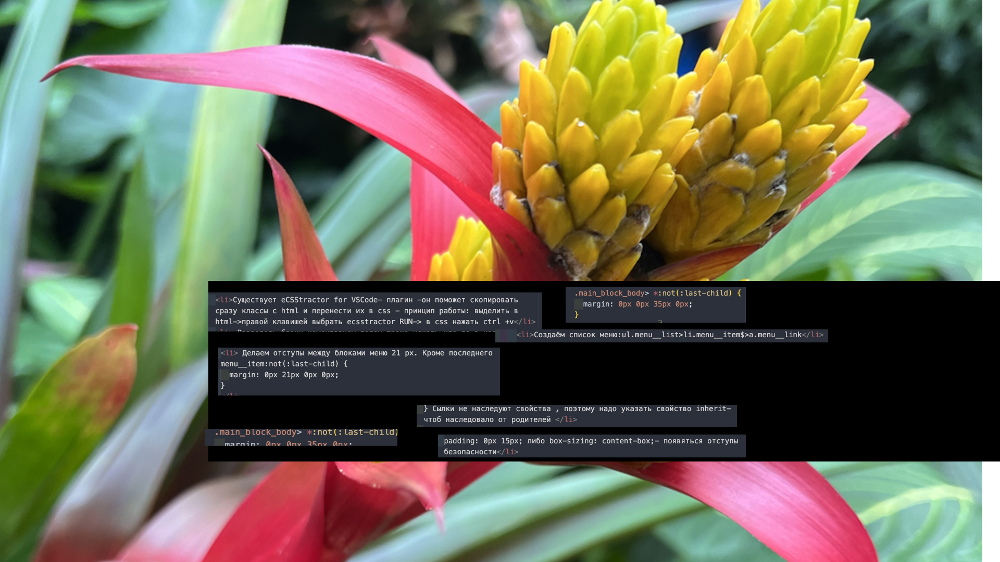

Effective Solutions for Your Business
Bring the key message to the brand's audience for the best price within the shortest possible time.
-отрицательные mergin подтягивают все блоки: .page__services {
position: relative;
z-index: 2;
margin: -111px 0px 0px 0px;
}


Envimental Consulting
section.page__services services>.services__conteiner _conteiner>.services__body>.services__column>.services__item item-service>(.(item-service__icon>img)+h3.item-service__title+.item-service__text).

Envimental Consulting
РАЗМНОЖИТЬ :services__column>.services__item item-service>(.(item-service__icon>img)+h3.item-service__title+.item-service__text).

CSS
.services__body {
display: flex;
margin: 0px -15px;
}
.services__column { padding: 0px 15px; flex: 0 1 33.333%; }br .services__item { box-shadow: 0px 13px 13px rgba(0, 0, 0, 0.07); background-color: #fff; padding: 35px; }
.item-service { }
.item-service > *:not(:last-child){ margin: 0px 0px 10px 0px; }
.item-service__icon { }
.item-service__title { font-weight: 700; letter-spacing: 0.1; font-size: 24px; line-height: 133%; }
.item-service__text { color: #737373; line-height: 142%; }. если прописать в .services__item { height: 100%;- будут контейнеры одного размера , а не разного в зависимости от наполнения (так было раньше!)
.services__column { padding: 0px 15px; flex: 0 1 33.333%; }br .services__item { box-shadow: 0px 13px 13px rgba(0, 0, 0, 0.07); background-color: #fff; padding: 35px; }
.item-service { }
.item-service > *:not(:last-child){ margin: 0px 0px 10px 0px; }
.item-service__icon { }
.item-service__title { font-weight: 700; letter-spacing: 0.1; font-size: 24px; line-height: 133%; }
.item-service__text { color: #737373; line-height: 142%; }. если прописать в .services__item { height: 100%;- будут контейнеры одного размера , а не разного в зависимости от наполнения (так было раньше!)